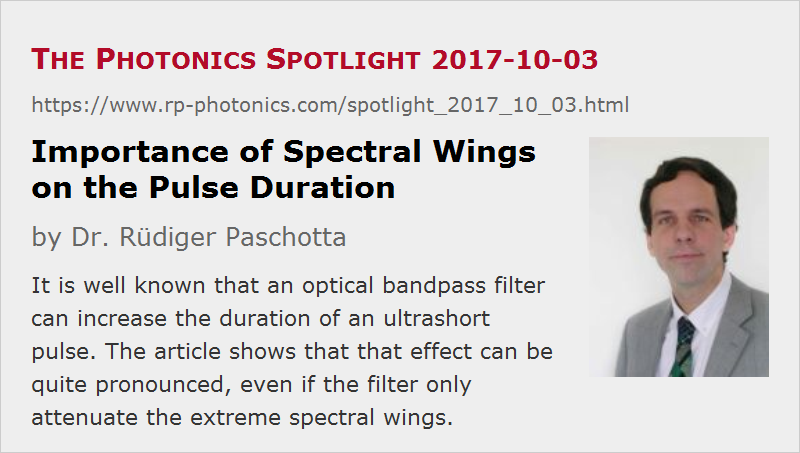

Importance of Spectral Wings on the Pulse Duration
Posted on 2017-10-03 as a part of the Photonics Spotlight (available as e-mail newsletter!)
Permanent link: https://www.rp-photonics.com/spotlight_2017_10_03.html
Author: Dr. Rüdiger Paschotta, RP Photonics Consulting GmbH
Abstract: It is well known that an optical bandpass filter can increase the duration of an ultrashort pulse. The article shows that that effect can be quite pronounced, even if the filter only attenuate the extreme spectral wings.

Ultrashort light pulses intrinsically have a large optical bandwidth. This means in turn that the pulse duration can be increased if the optical bandwidth is decreased, for example, when such pulses are sent through a bandpass filter or through an optical amplifier with limited gain bandwidth.
So far, this is all well known. However, many will be surprised to see how important the extreme wings of the optical spectrum of the pulse duration are. I will demonstrate that with a numerical example:
Let us start with a 100-fs sech2-shaped pulse. The following diagram shows its optical spectrum (blue curve), having a full width at half maximum (FWHM) of 3.15 THz, which corresponds to 11.8 nm. The diagram also contains a second spectrum (red curve), obtained after transmission of the pulse through a super-Gaussian spectral bandpass filter, which for simplicity we assume to have zero chromatic dispersion. The filter bandwidth has been chosen such that only the extreme spectral wings are attenuated; the pulse energy drops only by 1.7%. The pulse bandwidth in terms of its full width at half maximum is not significantly reduced.
Now we compare the two resulting pulses in the time domain – see the following figure. You may be quite surprised to see that the filtered pulse has become substantially longer: the pulse duration increased from 100 fs to 129 fs, and the peak power has been reduced by as much as 17.8%:
An Explanation
How can we explain that surprisingly large impact of the seemingly weak spectral filtering?
You can consider the optical amplitudes in the time domain as a superposition of a continuum of oscillations with different optical frequencies – that is how such amplitudes can be calculated from the spectrum with a Fourier transform. Here, it is important to recognize that we have a superposition of amplitudes, not of intensities. For example, consider a position in the extreme wings of the spectrum where the power spectral density is 20 dB down from the spectral peak. Such a spectral component still has 10% of the amplitude of the central component; keep in mind that the spectral intensity scales with the squared modulus of the amplitude. Therefore, you must expect such amplitudes in the wings of the spectrum to have a significant effect on the resulting time-domain amplitudes. Further, the power in the time domain is again proportional to the squared modulus of the amplitude. After those considerations, you should no longer be surprised!
If you find working with a continuum of spectral components somewhat awkward, you can consider a superposition of discrete spectral components, as we obtain e.g. for a regular pulse train. For example, you could just assume three spectral lines – one with amplitude 1 and two equally spaced lines at lower and higher frequencies with amplitude 0.01. You would see that even those weak additional spectral lines because a significant oscillation of power in the time domain.
A similar phenomenon is known from interference effects between monochromatic waves. For example, if you superimpose two laser beams, where one has 100 times less optical intensity than the other one, you can still obtain a significant oscillation of the total intensity. You can use exactly the same mathematical reasoning as above for an explanation.
Further Remarks
You will now find it easy to understand why the time–bandwidth product of Gaussian pulses is substantially larger than for sech2-shaped pulses: just look at the spectral wings for both pulse shapes! A Gaussian pulse has a Gaussian spectrum, and the Gaussian function is known to decay rather fast.
As another remark, it is actually not realistic to expect that a bandpass filter will have no chromatic dispersion. If you take that into account as well, you will find that the pulse duration is increased further.
By the way, there are also cases where the pulse duration is decreased when a bandpass filter reduces the pulse bandwidth. That can happen for strongly chirped pulses, and can be easily understood: the extreme spectral components then correspond to extreme temporal positions! But this works only as long as the time–bandwidth product is large.
This article is a posting of the Photonics Spotlight, authored by Dr. Rüdiger Paschotta. You may link to this page and cite it, because its location is permanent. See also the RP Photonics Encyclopedia.
Note that you can also receive the articles in the form of a newsletter or with an RSS feed.
Questions and Comments from Users
Here you can submit questions and comments. As far as they get accepted by the author, they will appear above this paragraph together with the author’s answer. The author will decide on acceptance based on certain criteria. Essentially, the issue must be of sufficiently broad interest.
Please do not enter personal data here; we would otherwise delete it soon. (See also our privacy declaration.) If you wish to receive personal feedback or consultancy from the author, please contact him e.g. via e-mail.
By submitting the information, you give your consent to the potential publication of your inputs on our website according to our rules. (If you later retract your consent, we will delete those inputs.) As your inputs are first reviewed by the author, they may be published with some delay.
|  |
If you like this page, please share the link with your friends and colleagues, e.g. via social media:
These sharing buttons are implemented in a privacy-friendly way!